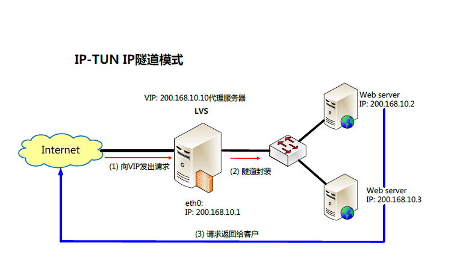
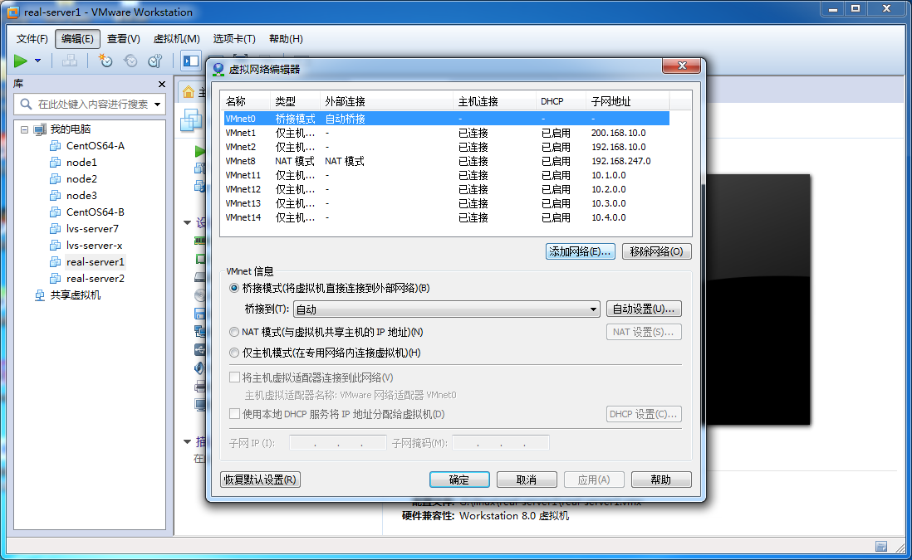
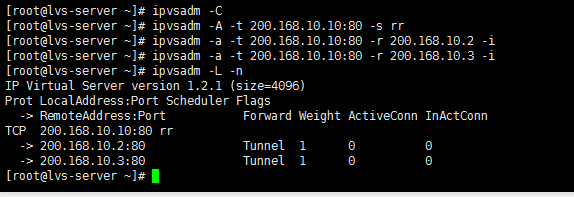
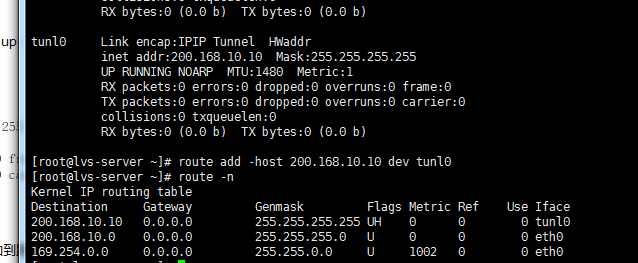
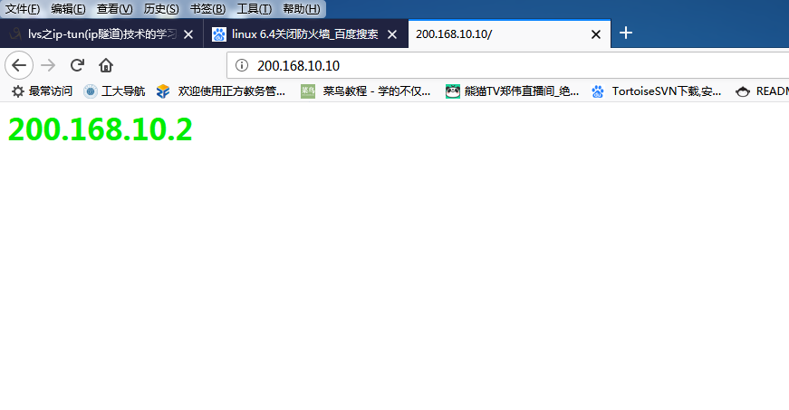
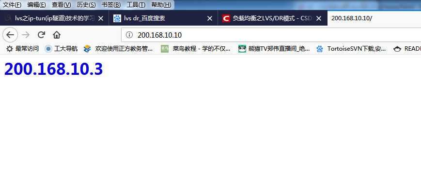

Linux-LVS负载均衡之TUN（隧道技术）方法实现
实现原理图：

准备工作
该练习需要三个主机（本人使用的是CentOS6.4版本操作系统），可以通过虚拟机克隆技术克隆另外两个主机，当然，克隆完之后记得更改主机名，便于操作与识别。一台充当LVS服务器（lvs-server:（单网卡：eth0:200.168.10.1））另外两台真实服务器（real-server1（单网卡：200.168.10.2）、real-server2（单网卡：：200.168.10.3））
（1） 添加虚拟网络VMnet1，设置网段：200.168.10.0 ，子网掩码：255.255.255.0；

（2） vmnet1 win7下设置IP为：200.168.10.4，netmask：255.255.255.0，不需要指定网关
（3） 在Lvsserver安装软件ipvsadm（此步可以提前，需要在NAT网络连接模式开启）：
yum -y install ipvsadm*
（4）使用vmnet1（模拟外网），除了vmnet1之外，其它网络全部关掉（否则有可能会对实验结果造成影响，记住，是有可能！）
开始配置
1、配置IP （均使用vmnet1网段）
（1）lvsserver: 配置临时ip(本实验为临时测试)
ifconfig eth0 200.168.10.1 netmask 255.255.255.0
（2）real-server1 配置临时ip:
ifconfig eth0 200.168.10.2
（3）real-server2 配置临时ip:
ifconfig eth0 200.168.10.3
2、依次检查防火墙（lvs-server, real-server1,real-server2）
iptables-L -n (iptables)
sestatus(selinux)
3、在lvs-server上开启路由管道
echo 1 > /proc/sys/net/ipv4/ip_forward
4、lvs-server配置
（1）配置 ipmServer
ipvsadm -C
ipvsadm -A -t 200.168.10.10:80 -s rr
ipvsadm -at 200.168.10.10:80 -r 200.168.10.2:80 -i
ipvsadm -at 200.168.10.10:80 -r 200.168.10.3:80 -i
ipvsadm -L –n

（2）配置虚拟IP
1） ifconfig tunl0 200.168.10.10 netmask 255.255.255.255 up //虚拟一个隧道IP 4个255代表它自己一个网段
2） route add -host 200.168.10.10 dev tunl0 //把网段 添加到路由表 防止走 200.168.10.0 网段
route -n查看

5、分别配置两个真实服务器real-server1,real-server2
ifconfig tunl0 200.168.10.10 netmask 255.255.255.255 up
route add –host 200.168.10.10 dev tunl0
echo “1” > /proc/sys/net/ipv4/conf/tunl0/arp_ignore
echo “2” > /proc/sys/net/ipv4/conf/tunl0/arp_announce
echo “1” > /proc/sys/net/ipv4/conf/all/arp_ignore
echo “2” > /proc/sys/net/ipv4/conf/all/arp_announce
PS：如果ping 200.168.10.10能通，但是网页浏览不通。
解决方法：分别在真实机运行下面命令
echo “0” > /proc/sys/net/ipv4/conf/tunl0/rp_filter
6、添加HTML用于测试显示
（1) 在real-server1设置
service httpd restart
cd /var/www/html/
echo “<h1> <font color=’red’>200.168.10.2 </font> </h1>” > index.html
（2)在real-server2设置
service httpd restart
cd /var/www/html/
echo “<h1> <font color=’blue’>200.168.10.3 </font> </h1>” > index.html
测试
打开Windows浏览器，在地址栏输入200.168.10.10,回车，显示内容为下图

或者

当点击刷新按钮时会显示另外一个网页。
完毕！谢谢浏览！